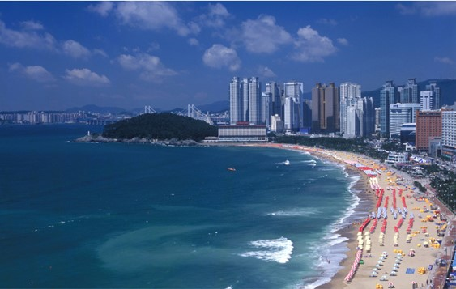

MTSA 2019
Conference Venue
MTSA‘19 conference will be held in Busan, Korea.
The Conference Venue is “Hanwha Resorts Haeundae Tivoli”.

Information about Busan
Dynamic Busan!
1.Haeundae Beach

▶ Available period : June 1st-September 30th (4 months)
▶ Getting there: Subway line 2 to Haeundae Station (Exit 3 or 5)→
600m in the direction of Haeundae seaside.